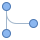

HOME
Dirack's Lounge
Programação aplicada à Geofísica
Me siga nas minhas redes sociais:

Categorias:
Fortran
C
Shell Script
C++
Artigos Publicados:
© 2018, Rodolfo Dirack. Todos os direitos reservados.